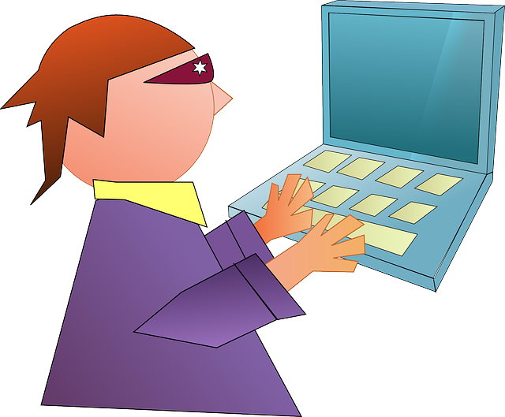

TryHackMe - Easy Peasy Walkthrough
A concise walkthrough of the Easy Peasy CTF room on TryHackMe.
This guide covers enumeration, exploitation, and privilege escalation.
Enumeration
Scan the target with nmap:
nmap -sC -sV -p- <target-ip>
Open ports found:
- 80 (nginx 1.16.1)
- 6498
- 65524 (Apache)
Exploitation Steps
Task 1 - Hidden Directory
Used gobuster → discovered /hidden/whatever/
Found a Base62 hash → decoded →
Flag 1: [REDACTED]
Task 2 - Robots.txt
On IP:65524/robots.txt → extracted unusual user-agent
Decoded with MD5 →
Flag 2: [REDACTED]
Task 3 - Source Code
Source code at IP:65524 → contained hash
Flag 3: [REDACTED]
Task 4 - Hidden Path
Another Base62 string →
IP:65524/************ Flag 4: Path discovery
Task 5 - Cracking Hash
Hash in source code → cracked using john with easypeasy.txt
Password: [REDACTED]
Task 6 - Steganography
File binarycodepixabay.jpg → run stegcracker
Found credentials: username and password
Task 7 - SSH Access
Logged in with ssh
Found user.txt → ROT13 decoded →
Flag 7: [REDACTED]
Task 8 - Privilege Escalation
Checked /etc/crontab → modified .mysecretcronjob.sh with reverse shell
Got root shell via nc -lvnp 4444
Read /root/.root.txt →
Root Flag: [REDACTED]
Conclusion
Successfully captured all flags 🚩
This room reinforced skills in:
- Enumeration (nmap, gobuster)
- Hash cracking
- Steganography
- Reverse shell setup
- Privilege escalation